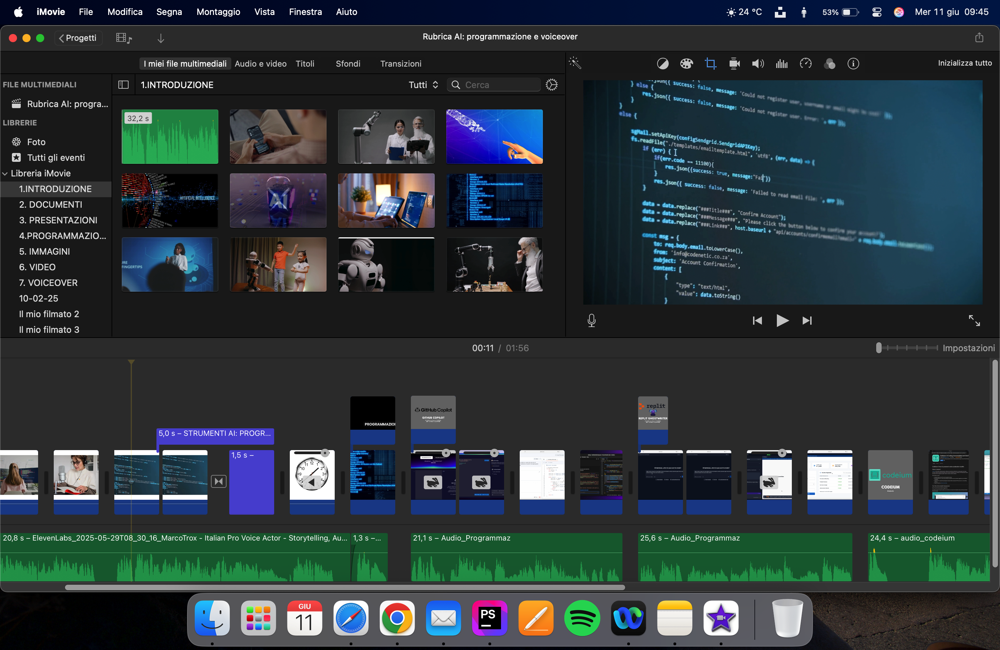
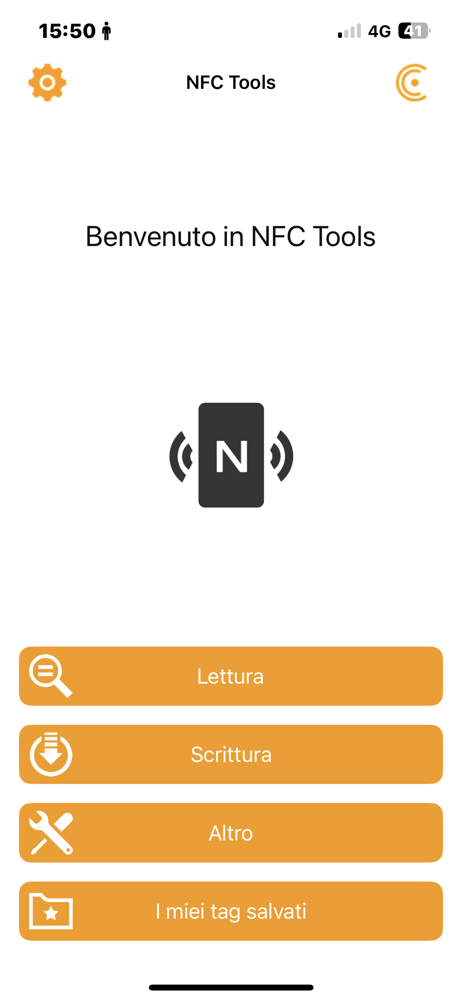

Ciao a tutti, Mi presento a coloro a cui non ho avuto il piacere di presentarmi, mi chiamo Tommaso Marioni, ho 17 anni e sono uno studente dell’I.T. Antonio Zanon. Sono stato tre settimane in alternanza scuola-lavoro qui alla Tecnest.
Desidero esprimere un sincero ringraziamento a tutto il team di Tecnest Srl per avermi accolto con
grande disponibilità e gentilezza durante queste tre settimane di alternanza scuola-lavoro.
Sin dal primo giorno mi sono sentito parte del gruppo: l'ambiente è stato collaborativo, stimolante
e soprattutto umano. Ho avuto la possibilità di osservare da vicino la realtà di un’azienda strutturata,
partecipare attivamente ad attività concrete e imparare davvero tanto, sia dal punto di vista tecnico
che personale.
È stato un periodo che porterò con me con piacere, non solo per ciò che ho appreso, ma anche per come
sono stato trattato: con rispetto, fiducia e attenzione.
Un ringraziamento speciale va alla mia tutor Erika, che è stata una guida costante e preziosa durante
tutto il mio percorso in azienda.
Con grande disponibilità, pazienza e competenza mi ha accompagnato ogni giorno, spiegandomi con chiarezza
i compiti, coinvolgendomi in attività concrete e trasmettendomi fiducia. La sua presenza è stata fondamentale
per rendere questa esperienza così positiva, interessante e formativa. Grazie di cuore per tutto!
Grazie a tutti per avermi fatto sentire coinvolto e valorizzato, e per avermi dato l’opportunità di vivere
un’esperienza così formativa.
Con gratitudine, Tommaso
Onboarding, Boarding Day, Rubrica AI
Value Proposition su Viki, JavaScript, Referenze
vCard NFC, Factory RoadShow
Settimana 1: Ho conosciuto l'azienda e ho iniziato i progetti Boarding Day e rubrica AI.
Oltre ad aver supportato Erika nella preparazione di presentazioni, documenti e liste per il Digital Factory Roadshow, e ad aver svolto altre piccole mansioni, mi sono concentrato su questi tre progetti principali:
Ho realizzato un sito web per l’evento interno del 26 giugno. Ho creato una pagina HTML + CSS che funge da “locandina” e presentazione dell’evento.

Ho prodotto tre video che illustrano come l’Intelligenza Artificiale possa ridurre i tempi e aumentare l’efficienza del lavoro (presentazioni, documenti, video, VoiceOver, immagini e programmazione).
Per il Digital Factory Roadshow ho scritto dei tag NFC, che consentiranno di scaricare i contatti dei commerciali. La sfida principale è stata garantire il corretto funzionamento del tag sia su dispositivi Android che iOS, dato che i due sistemi operativi presentavano modalità di funzionamento differenti. Ho quindi creato una vCard per Android e, per iPhone, ho inserito un collegamento a una pagina HTML che offre la possibilità di scaricare la scheda.
